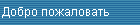
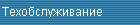

Проверенные временем, испытанные аналоговые копиры. Конечно, их время уходит, уступая дорогу более современной цифровой технике, и новых моделей уже не будет, но те, что пока оставлены для производства - это настоящие шедевры, лучшие в своем классе
Konica 1212 - надежный помощник в Вашем офисе. При производительности 12 копий в минуту он универсален и позволяет работать с оригиналами формата А3 и получать копии размера А3. Он оснащен функцией ZOOM для масштабирования изображения. Совокупность этих характеристик редко встречается у данного класса копиров. Эта модель обладает отличными эргономическими характеристиками: низкий уровень шума, система рециркуляции тонера, энергосберегающий режим, что особенно важно для малых офисов. Самый популярный на сегодняшний день из всей линейки аналоговых аппаратов Konica. Надежен, прост и удобен в эксплуатации.Если нет необходимости в более сложных копировальных аппаратах, то может стать прекрасным выбором
Конструктивно аналогичен модели 1212. Отличается скоростью (16 копий в минуту), возможностью установки дополнительного оборудования (автоподатчика, сортировщика, тумбы с податчиками бумаги), наличием дополнительной кассеты для бумаги и дополнительными пользовательскими режимами: фоторежим, копирование с разворота. Отличное качество копий достигается за счет нового идеально однородного тонера и выского уровня автоматизации. Автоматический выбор бумаги, автоматическая экспозиция и автоматическое масштабирование - это неполный перечень функций аппарата
1312 - копир малой производительности (12 копий в мин., формат В4), но при этом обладает значительными ресурсами. Способен сделать до 5000 копий на одной заправке тонером. Возможность масштабирования и установки автоподатчика делают этот аппарат удобным помощником в малом офисе. Аппарат самостоятельно определяет формат оригинала и производит оптимальное масштабирование изображения, также возможно смещение изображения влево и вправо, раздельное копирование разворота на две отдельные страницы, устранение тени на краях и у корешка книги
Копировальный аппарат средней производительности. 25 копий в минуту, повышенное качество копирования, автоподатчик документов с оборотом. Возможность установки сортера, степлирующего сортера
Копировальный аппарат средней производительности. Обладает улучшенной системой подачи бумаги, которая значительно снизила уровень шума при работе и сделала еще более надежным в эксплуатации. Это позволило увеличить эффективность работы блока подачи документов для двухстороннего копирования (RADF) до 100%, а дуплекса (ADU) до 82%, т.е. при двустороннем скорость копировании практически не снижается. Выбор функций осуществляется с помощью жидкокристаллического дисплея через ряд клавиш, находящихся над ними. В аппарат включены практически все функции редактирования изображения и автоматизации, известные для аналоговых копиров. Специальные функции предусмотрены для работы с толстой и тонкой бумагой, с ОНР-пленками и для работы в условиях высокой влажности. Режим автоматического копирования позволяет делать копии без нажатия кнопок, достаточно положить оригинал и закрыть крышку


Copyright © 2001
ООО "Формат-Сервис" г.Владивосток, ул. Уборевича 19, оф.103 тел/факс: +7-4232-26-79-41
e-mail: contact@format-service.ru